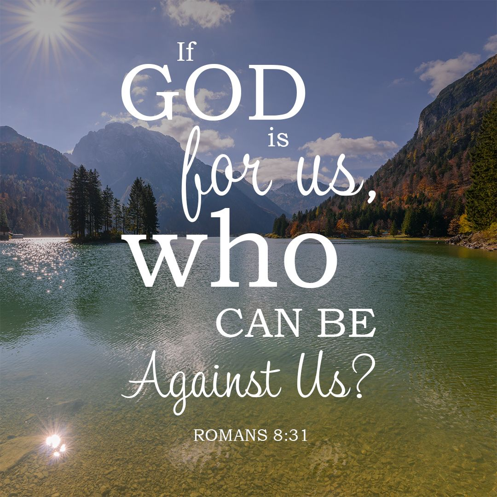

Cornerstone Christian Church is an Bible-based Church family ministering to a wide range of individuals and families with both love and compassion. Morning worship is the heart of our corporate expressions meeting in the Cornerstone Ministry Center at 49th and Old Cheney Road at 10:30 AM on Sundays. Worship consists of primarily contemporary Christian music similar to what you would hear on 95.1 or 89.9 FM in the Lincoln area. We offer weekly communion to all who wish to take part along with a time of prayer. The messages are Bible-based and applicable to life and often incorporate humor. Cornerstone cares about single moms and dads, and young families starting out. We offer Zac's Place Childcare Center care that is distinctively Christian and award winning care at the lowest rates around. We share space with Zac's Place and offer tremendous care and teaching opportunities for children throughout the week and weekend. A breakfast bar is offered for a morning boost provided by a large group of caring people so you do not have to rush out to find a restaurant. Cornerstone is a safe and healthy place to worship, and to heal and to grow!